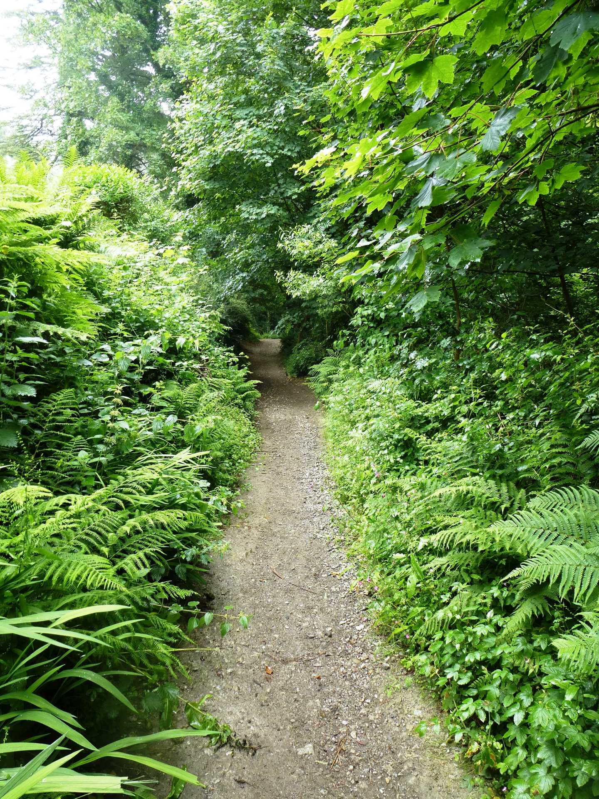
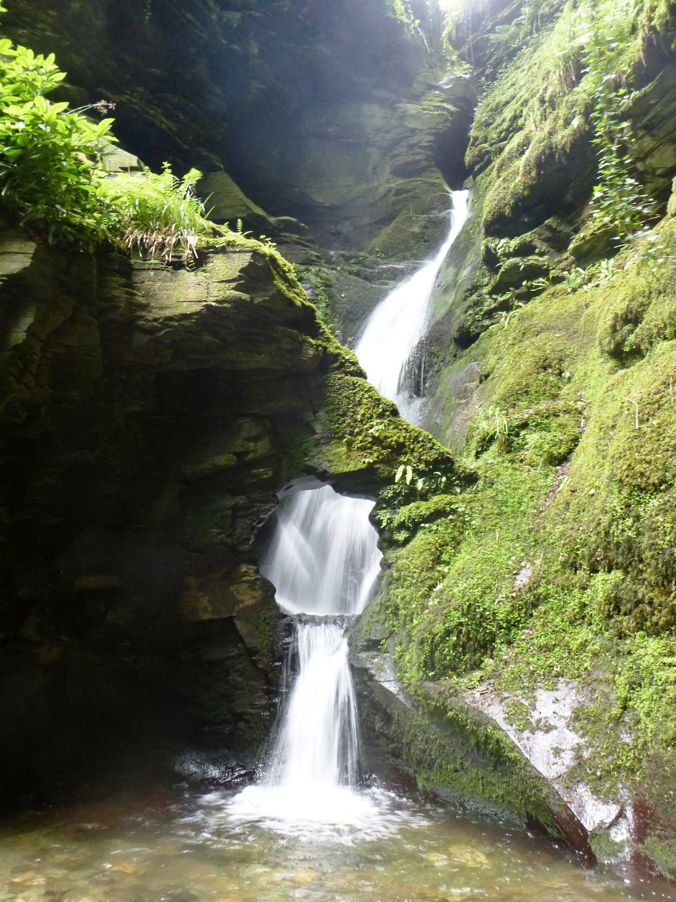

Start Ref: 076 893
End Ref: 454 534
Distance: 2 miles
Time: 2hrs
We leave our car in the little car park pull in midway between Tintagel and Boscastle on the B3263. There are two pull ins and we start our walk on the opposite side of the road to the second pull in.
The walk starts by leading up a bridleway and on to St. Piran`s Well and Chapel. The walk loops out from here, and back to here. For today`s walk we are going to bear right, keeping the Church on our left and follow the footpath as it leads us pass the Roman Milestone and then slowly down into the valley. The path slowly bears left and down until it reaches the valley floor and we find ourselves walking alongside the stream.
We are going to follow the stream inland and follow it up the valley until we reach a wooden footbridge, where a footpath from the opposite side of the valley joins our path. I mention this bridge, firstly as a point of reference so we know that we are on the correct path, but also because on our left we will find a fallen tree that is imbedded with coins in lines to the extent that it looks like a scaly dragons limb.
Continue on up on the same side of the stream and we then come across arguably the hardest section of this walk. The path now starts to head up the valley side and is quite steep. As we reach this point we start to hear the first tantalizing sounds of the waterfall. As the path reaches the top, it opens out into a small complex of cafe`s, toilets and a shop.
Here, we can either pay to see the waterfall (which is totally hidden from the public path), have an ice cream or continue our walk.
The path that we are going to leave by, heads up passing the toilets on our right and following what is now a bridleway. This bridleway takes a sharp right after about 200m and then a sharp left after a further 200m. The sharp left marks the point at which we are at our highest point on this walk, and as such gives us lovely views out over the cost before dropping gently down towards the Church and St. Piran`s Well.
From here we hop across the road and our walk is complete.
This walk has the beauty of streams in a valley and views out over the coast. If we have paid to see the waterfall, we have also had the beauty of the Kieve.
I hope that you enjoy, and that it leaves you feeling as happy as all those polled (except maybe for the entry fee).